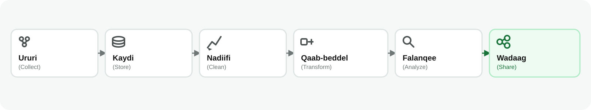
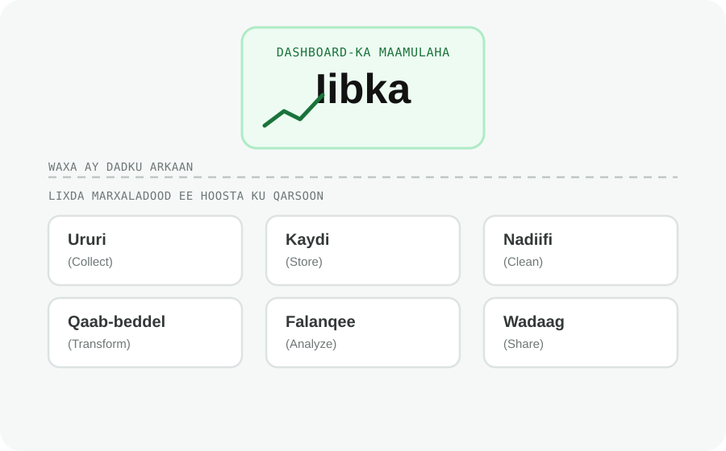

Halka Xogtu Ku Kaydsan Tahay iyo Data Pipeline-ka
Waxaad awoodi doontaa inaad sheegto marxaladaha dataset-ku maro iyo halka lagu kaydiyo marxalad kasta.
Dulmar
Tirada iibka ee maamuluhu saaka dashboard-ka ku arkay waxay saddex toddobaad ka hor ku bilaabatay lacag mobile money ah oo lagu bixiyey kiish bariis ah. Intii u dhexaysay lacag-bixinta iyo dashboard-ka, xogta waa la ururiyey, la kaydiyey, la nadiifiyey, qaabkeeda waa la beddelay, waana la soo koobay. Badanaa shaqadaas waxaa qabta nidaamyo aanay dadka shirka jooga arag.
Xogtu hal meel oo keliya kuma jirto. Waxay martaa nidaamyo iyo marxalado kala duwan ka hor inta aanay noqon mid waxtar leh.
Halka Xogtu Ku Kaydsan Tahay
Shirkaduhu waxay xogta ku kaydiyaan nidaamyo kala duwan marka loo eego ujeeddada iyo baaxadda xogta.
Farqiga muhiimka ahi waa ujeeddada nidaam kasta. Database waxaa loo dhisaa inuu diiwaangeliyo waxa hadda dhacaya, hal iib ama macaamil (transaction) markiiba. Data warehouse waxaa loo dhisaa inuu ka jawaabo suʼaalo ku saabsan xogtii sannadihii hore. Haddii database-ka dukaanka la weydiiyo suʼaal u baahan xogta saddexdii sano ee la soo dhaafay, suʼaashaasi waxay gaabin kartaa nidaamka hawl maalmeedka ee dukaanka.
Waa maxay Data Pipeline?
Data pipeline waa hab-socodka ay xogtu marto laga bilaabo isheeda ilaa isticmaalkeeda ugu dambeeya.

Marxalad kasta waxay leedahay ujeeddo:
Tusaale
La soco sida xogtaasi uga soo gudubto nidaamka mobile money-ga ilaa dashboard-ka maamulaha:
- Data pipeline-ka ganacsaduhu wuxuu ururiyaa (Collect) xogta lacag-bixinnada ee ka timaadda nidaamka mobile money-ga
- Xogta waxaa lagu kaydiyaa (Store) database, data warehouse, ama meel kale oo uu ganacsaduhu xogtiisa ku hayo
- Data pipeline-ku wuxuu nadiifiyaa (Clean) xogta, isaga oo ka saaraya diiwaannada soo noqnoqda, lacag-bixinnada la celiyey, iyo khaladaadka kale
- Xogta waxaa loo qaab-beddelaa (Transform) qaab waxtar leh, sida wadarta iibka maalinlaha ah ee dukaan kasta
- Falanqeeye (analyst) ayaa falanqeeya (Analyze) xogta si uu u ogaado dukaamada iibkoodu kordhayo iyo kuwa aanu isbeddelin
- Natiijooyinka waxaa lagu wadaagaa (Share) dashboard-ka, halkaas oo maamuluhu ka arki karo
Xogtu waxay martay lix marxaladood, laakiin tirada dashboard-ka ku jirta ayaa ah qaybta keliya ee ay dadka shirka jooga arkaan.
